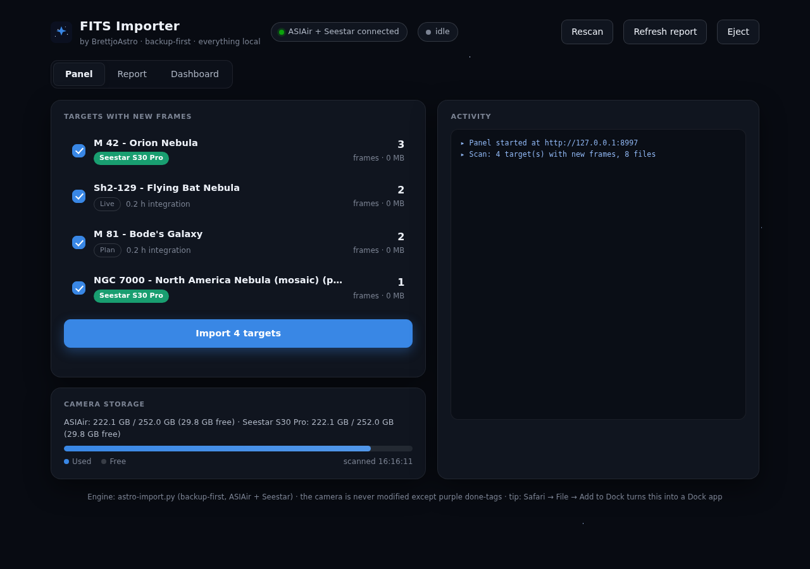
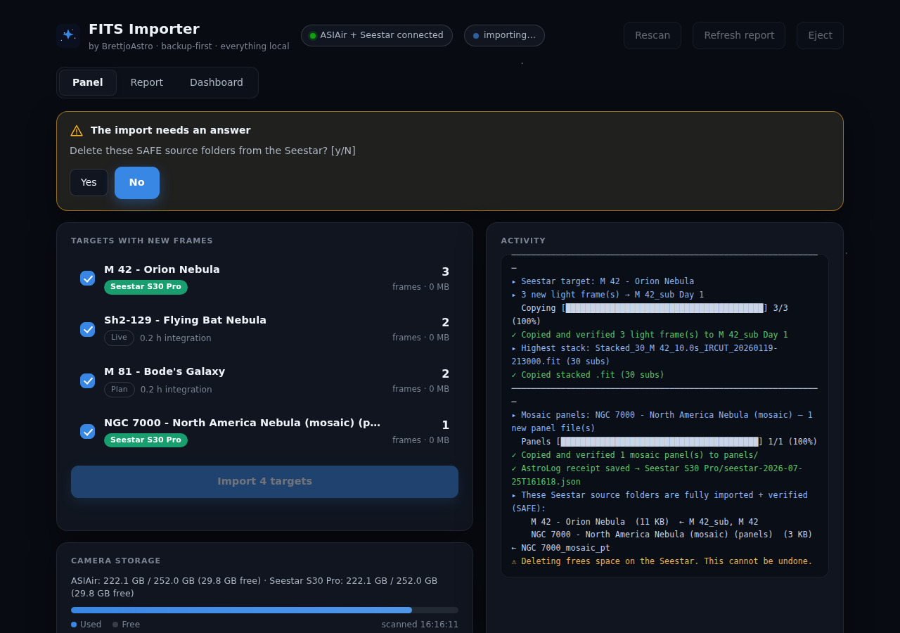
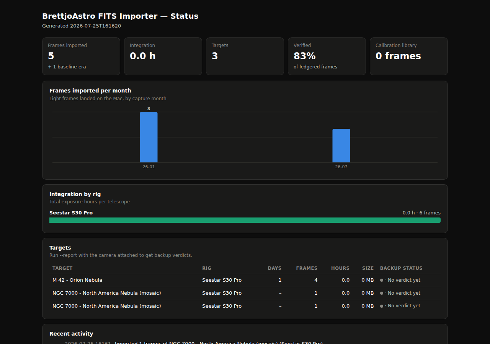

Backup-first imports for ZWO ASIAir and Seestar smart telescopes. Every frame verified to the byte, every session remembered forever.
Smart telescopes fill up fast, and hand-copying folders around leaves you guessing. Delete too early and a night's data is gone; delete too late and the camera is full at 2am under a clear sky. Most import scripts just copy — they can't prove anything arrived intact, and they forget everything the moment you archive a finished target.
A launchd watcher spots either camera mounting, scans read-only, sends a notification, and opens the local control panel. Tick targets, hit import. No terminal needed.
Each frame is stream-hashed from the camera, written to a .partial, fsynced,
re-read from disk and re-hashed before it counts. Nothing is ever marked imported unless
the bytes on your Mac provably match the camera.
Every frame from every camera joins one register — SHA-256, exposure, night, scope, day number. Archive finished targets wherever you like: the ledger still knows, so nothing re-imports and history survives.
The Seestar's end-of-run delete offer lists only folders in which every single file is ledger-verified. The ASIAir is treated as a backup of record — it never offers deletion at all.
Askar FRA400 Askar 107PHQ
Filename-parsed metadata with FITS fallback, per-scope recognition from focal length, mosaic panel awareness, and a calibration library that ingests every dark, flat and bias — then hard-links the right set (gain, filter, focal length, rotator angle) into each session's folder, asking first when flats look like they belong to another project.
Seestar S30 Pro Seestar S50
Model detected from FITS headers, MyWorks project folders parsed with all their quirks:
sub-frames into Day folders, only the highest stack kept, mosaic panels filed under
panels/, and simultaneous Milky Way captures automatically paired to the DSO
session shot at the same moment. S50 Lunar / Solar / Planetary modes import too.



.partial, never a
half-file posing as a backup; re-running resumes with zero double-copies.Requires macOS with Xcode Command Line Tools Python 3 and
astropy. Built and tested on a ZWO ASI585MC Air and a Seestar S30 Pro.
git clone https://github.com/Brettjo77/brettjoastro-fits-importer.git cd brettjoastro-fits-importer bash install-scripts.sh # then plug a camera in — the panel opens by itself
Custom folder locations? Copy
config.example.json to ~/Library/Application Support/Astro
Import/config.json and edit — the installer never overwrites it. First run on an
existing archive? Use --baseline so your history joins the ledger without
copying a thing, then --reconcile to verify what's already on disk.